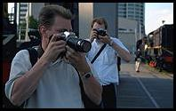
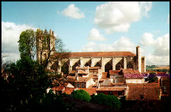

{kind=link}
 unremarkable pictures
unremarkable pictures The way I see it, this is what will happen...
It will happen by accident as it often happens when someone with two seemingly unrelated interests has a new idea: the expert-systems researcher with a passion for the academic deconstruction of fine art makes a new connection.
 He is looking for an application for his image analysis application - when he has the idea that can teach it his knowledge about art. Later, our researcher has developed a new application which generates natural language critiques of digital images of fine art.
One of our researcher's colleagues takes an interest. His hobby, however, is photography and he just happens to have an eye for a good photo. Automatic photography criticism is born.
The technology finds its killer application in the high-street: the shop where your photographs are developed can now use to new system to automatically sort your efforts into
unremarkable picturesMeanwhile, consumer digital cameras start to include new features. The first will probably be a warning message when you try to take a picture which is going to be completely blank or just too dark. Philip Greenspun has had a similiar idea to this.
 The culmination of all this will inevitably be a consumer digital
camera that is truly critical of the shots you take. This will go far beyond warning you about photographs which are not going to come out.
The culmination of all this will inevitably be a consumer digital
camera that is truly critical of the shots you take. This will go far beyond warning you about photographs which are not going to come out.
Your camera will actually lock up if you try to take tedious holiday pictures of people you cannot remember or of tourist attractions that everyone has seen thousands of pictures of before. There will be an audible alarm that sounds whenever you are about to take cheesy sunset pictures and the like. The camera will even power itself down if any celebrities are detected in the field of view.